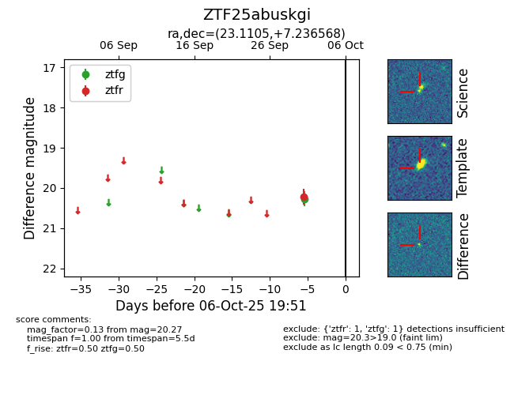

FINK: ZTF25abuskgi
Lasair: ZTF25abuskgi
ALeRCE: ZTF25abuskgi
ZTF25abuskgi (ztf,fink)
equatorial (ra, dec) = (23.1105,+7.23657)
galactic (l, b) = (140.5110,-54.22971)

last ztfg=20.27, ztfr=20.21
1 ztfg, 1 ztfr detections